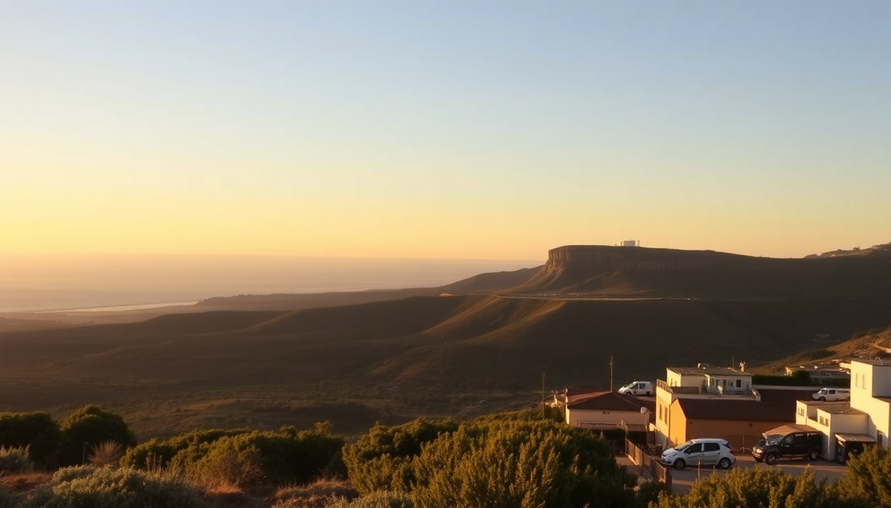

Best Day Trips from Faro: Benagil, Tavira & Ria Formosa

I based myself in Faro for a week, and honestly, it’s the perfect hub for the Algarve. The city itself is compact and walkable—you can knock out the old town in a morning—but the real value is in what you can reach in under an hour. I took three separate day trips: one by boat to Benagil Cave, one by train to Tavira, and one by foot (and kayak) into the Ria Formosa lagoon. Here’s exactly how each worked, what I’d do differently, and what’s worth skipping.
Why base yourself in Faro instead of Albufeira or Lagos?
Faro gets overlooked because it’s where the airport is. Most tourists land here and immediately drive west to Lagos or east to Spain. That’s a mistake. Faro’s train station connects directly to Tavira in 35 minutes, and the bus station runs frequent routes to Benagil (via Loulé). Albufeira is pricier and packed with stag parties; Lagos is beautiful but further from the Ria Formosa park. I paid €65/night for a room at Hotel Faro & Beach Club in the marina—clean, breakfast included, and a 10-minute walk to the old town. You don’t need a rental car for any of these trips, which saves on parking headaches.
How do I see Benagil Cave without the crowds?
Benagil Cave is the most photographed sea cave in the Algarve, and it’s a logistical puzzle. The cave itself is a 20-minute drive west of Faro, but you can’t walk in from land—you need a boat, kayak, or SUP. I booked a 2-hour boat tour from Marina de Faro with Formosamar (€35 per person, runs April–October). The boat took us to four caves along the coast, including Benagil. We had about 10 minutes inside the main cave, which was enough for photos but felt rushed.
- Crowd hack: Go on the first departure (9:00 AM) or last (5:00 PM). Midday boats queue up outside the cave.
- Alternative: Rent a kayak from Benagil Beach itself (€20 for 2 hours) and paddle in. You can beach the kayak inside the cave and swim. I did this on a second visit and preferred it—more control.
- Skip: The “sunset cruise” that includes Benagil. The cave faces east, so you get no sunset light inside. Save sunset for the Ria Formosa.
- Heads-up: The cave floor is wet and slippery. Wear water shoes.
Is Tavira worth the train ride from Faro?
Yes, and it’s the easiest day trip of the three. I caught the Comboios de Portugal regional train from Faro Station (€5.10 one-way, 35 minutes, runs hourly). Tavira’s train station drops you at the edge of town, a 10-minute walk across the Roman bridge into the old quarter. The vibe is sleepy and whitewashed—think narrow cobblestone alleys and orange trees in every courtyard. I spent four hours here and felt I saw the highlights.
- Lunch: O Castelo on Rua Dr. Augusto da Silva. A €12 prato do dia (grilled fish, potatoes, salad). No English menu, but the owner pointed at the catch of the day. It was sea bass.
- Must see: Tavira Castle (free entry, small Moorish ruins with a view over the salt pans). Pair it with a walk along Ria Formosa Natural Park on the town’s southern edge—flamingos in winter, herons year-round.
- Beach option: Take the ferry from Quatro Águas (€2.50 round-trip) to Ilha de Tavira. It’s a sandbar island with a long, uncrowded beach. I skipped it because the ferry line was 40 minutes deep at 1 PM; go before 10 AM if you want empty sand.
- What’s overrated: The Ponte Antiga (old bridge). It’s a pretty photo spot, but it’s just a bridge. Don’t build your day around it.
Can I explore Ria Formosa without a guided tour?
Absolutely, and I’d argue it’s better solo. The Ria Formosa Natural Park is a lagoon system with barrier islands, salt marshes, and tidal channels starting right at Faro’s eastern edge. I rented a kayak from Ria Formosa Kayak at the Faro Marina (€25 for 3 hours, includes a map and a dry bag). Paddled out to Ilha Deserta (Barreta Island)—about 40 minutes at a relaxed pace. The island has a single beach bar, Estaminé, where I ate a €8 tuna sandwich and watched the cargo ships pass.
- Best route: Head east from the marina toward Ilha do Farol. The channel is marked and shallow (1–2 meters deep). You’ll see starfish and crabs in the clear water.
- Walk option: The park boardwalk starts at Faro’s Quinta do Lago area (bus 2 from the city center). It’s a 3-km wooden path over the marsh, ending at a bird hide. Bring binoculars—I spotted spoonbills and avocets.
- Guided tour warning: I joined a “Ria Formosa boat tour” one afternoon (€40, 2 hours). It was a motorboat with 20 people, and we spent 45 minutes at a “local oyster farm” that was really a sales pitch for €15 oyster plates. Skip it.
- Timing: Go at low tide. The channels are deeper and you can paddle into smaller creeks. Check tide tables online before you head out.
What’s the best way to get around between these places?
Public transport works, but it requires planning. Here’s my tested combo:
- Faro to Benagil: Bus 57 from Faro Bus Terminal to Loulé (30 minutes, €3.50), then transfer to bus 2 to Benagil (20 minutes, €2). Total: 1 hour. Return bus runs until 7 PM.
- Faro to Tavira: Train, as above. Easy and reliable.
- Faro to Ria Formosa: Walk or bike. The marina is 15 minutes from the old town. I rented a bike from Faro Bikes (€12/day) and rode the coastal path to the park entrance in 20 minutes.
- Car rental: I didn’t rent one, but if you do, Hertz at Faro Airport had a compact car for €30/day in April. Parking in Tavira costs €1.50/hour at the Praça da República lot. Benagil has a free dirt lot above the beach, but it fills by 10 AM.
FAQ
How long should I spend in Faro itself? One full day is enough. See the Arco da Vila, walk the Cidade Velha (old town), and have a meal at Cozinha da Avó (€10 lunch special, grilled chicken with piri-piri). The Faro Municipal Museum in the former convent is decent but not world-class—skip it if you’re short on time.
Are the Benagil Cave tours worth the money? Yes, if you pick the right one. Small-group tours (max 10 people) from Faro Boat Tours cost €45 and give you 15 minutes inside the cave. The big catamaran tours (50+ people) are €30 but you’ll share the space with three other boats. I’d pay the extra for the smaller group or just kayak from Benagil Beach.
Can I combine two day trips in one day? Not comfortably. Benagil is west, Tavira is east, and Ria Formosa is south of Faro. Doing Benagil in the morning and Tavira in the afternoon means 2+ hours of bus/train transfers. Pick one per day. I tried Tavira + Ria Formosa in one day—ended up rushing the Tavira castle and missing the ferry to Ilha de Tavira.
Conclusion
- Base in Faro for cheaper hotels and direct transport to all three destinations. Hotel Faro & Beach Club worked well for me.
- Benagil Cave: Go early (9 AM) or rent a kayak from the beach. Boat tours from Faro are fine but crowded.
- Tavira: Train from Faro, lunch at O Castelo, and skip the ferry unless you arrive before 10 AM.
- Ria Formosa: Rent a kayak at the marina, paddle to Ilha Deserta, and avoid the guided boat tours.
- No car needed: Buses and trains cover everything. A rental adds cost and parking stress.